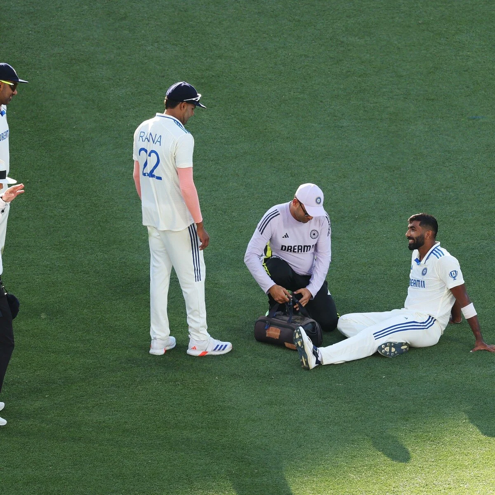
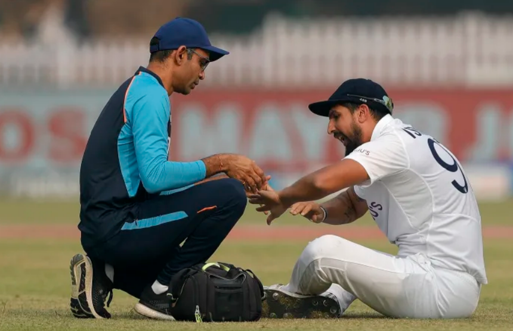

The Injury List That Never Ends
Let's play a game. Name an Indian fast bowler from the last decade who hasn't had a significant injury. Take your time. Think carefully.
Can't do it? Neither can I.
Jasprit Bumrah. Back stress fractures. Multiple surgeries. Missed months of cricket at the peak of his career. The best fast bowler India has ever produced, and his body keeps trying to shut him down.
Mohammed Shami. Ankle problems. Knee injuries. Missed the entire 2024 T20 World Cup — a tournament India won without him. By the time he recovered, the team had moved on.
Bhuvneshwar Kumar. Hamstring tears. Groin injuries. Sports hernia. Spent more time in the NCA (National Cricket Academy) than on the field between 2019-2022. Still hasn't played for India since 2022 despite taking 28 wickets in IPL 2026.
Ishant Sharma. Ankle injuries that plagued the second half of his career. Varun Aaron. Back injuries that destroyed what should have been a devastating career. Mohammed Siraj. Pulled out of the 2026 Ireland and England tours for "workload management." The list goes on. And on. And on.
This isn't bad luck. Bad luck is one bowler getting injured at a bad time. This is a pattern. And patterns have causes.
The Impossible Schedule

Look at what a first-choice Indian fast bowler's year looks like:
January-February: Bilateral series (home or away). Tests and/or ODIs. Full intensity.
March-May: IPL. 14-17 matches over 8 weeks. Death bowling at the highest intensity against the best batsmen in the world. Travelling between cities every 3-4 days. No real rest.
June-July: International tours. Often to England or Australia, where conditions demand extra effort from pace bowlers.
August-October: Asia Cup, bilateral home series, ICC tournament preparation.
November-December: Test series. The most physically demanding format. 5 days of cricket, 25+ overs per bowling innings.
Add it up. A frontline Indian fast bowler can play 50-60 matches across 10-11 months. That's not a cricket schedule. That's an endurance experiment with a human body that was never designed for this level of sustained physical stress.
And here's the part that makes it worse: the two-month IPL window, which should theoretically be a period where bowlers can be rested from international duty, is actually the most demanding period of the year. Because the financial stakes are highest. Because the matches are the most televised. Because no franchise is going to rest its ₹15 crore fast bowler to "manage his workload" when a playoff spot is on the line.
What Bowling 150 Actually Does to Your Body
There's a reason fast bowlers break down more than any other type of cricketer, and the science is genuinely terrifying when you look at it closely.
When a fast bowler lands his front foot during delivery, the force transmitted through his body is approximately 8 times his body weight. For a bowler weighing 85 kg, that's nearly 680 kg of force slamming through his ankle, knee, hip, and lower back every single ball.
A typical T20 match: 24 balls (4 overs). A Test innings: 120-150 balls (20-25 overs). An IPL season: roughly 350-400 deliveries. A full international year: potentially 2,000+ deliveries.
That's 2,000 repetitions of an action that generates 680 kg of force. Through the same joints. The same tendons. The same vertebrae. And the body is expected to handle this for 10-11 months with minimal recovery time between matches.
Research published in the British Journal of Sports Medicine found that fast bowling generates approximately 6-8 times body weight in ground reaction force on the front foot at delivery. The lumbar spine (lower back) experiences rotational forces that, over thousands of repetitions, can cause stress fractures — the exact injury that has plagued Jasprit Bumrah's career.
The human body is remarkably adaptable, but it has limits. And modern cricket, with its relentless schedule and its refusal to give fast bowlers adequate recovery time, routinely pushes past those limits. The injuries aren't surprising. The surprising thing is that any fast bowler survives a full calendar year without breaking down.
Why Workload Management Is a Joke
The BCCI talks about workload management like it's a science-driven, systematically implemented policy. It's not. It's a buzzword that gets used in press conferences to explain why a bowler has been rested from a bilateral series against Ireland, while the same bowler is expected to bowl 4 overs of death bowling in every single IPL match without question.
The fundamental problem is incentive structure.
When it comes to bilateral series against lower-ranked teams, the BCCI can afford to rest players. Nobody cares if Bumrah misses a 3-match T20I series against Bangladesh. The fans might grumble, but the team will probably win anyway.
But the IPL? That's different. IPL franchises pay ₹15-20 crore for a fast bowler. They expect that bowler to play every match, bowl the tough overs, and deliver in pressure situations. No franchise manager is calling a team meeting to say: "We're going to rest our most expensive player for 3 matches because his workload data says he's in a risk window." That doesn't happen. The money won't let it happen.
And the players themselves are complicit. If you're earning ₹18 crore from the IPL and ₹5 lakh per match from India, which employer are you going to prioritise when your body starts complaining? The answer is obvious. The IPL gets the best version of every fast bowler. India gets what's left over.
"We talk about workload management, but nobody manages the workload during the two months that matter most. The IPL is the elephant in the room that everyone pretends isn't there."Former India support staff member on bowling workload
How Australia Does It Differently

Australia has had its share of fast bowler injuries. But compared to India, their track record of preserving pace talent is significantly better, and the reason is systemic, not genetic.
Cricket Australia operates a genuine rotation system. Fast bowlers are regularly rested from bilateral series, even important ones, to ensure they're fresh for major tournaments. During the Big Bash (Australia's T20 league), the workload is monitored with precision — bowling speeds, delivery counts, training loads, and biomechanical data are tracked constantly and used to make proactive decisions about rest.
Pat Cummins, Josh Hazlewood, and Mitchell Starc have all benefited from this approach. They miss matches. Fans complain. Pundits question the decisions. But when a World Cup or an Ashes series arrives, all three are fit, fresh, and firing. That's not coincidence. That's planning.
India's approach is the opposite. Play everyone, all the time, until they break. Then send them to the NCA, rehabilitate for 3-6 months, bring them back, and repeat the cycle. It's reactive medicine instead of preventive care. And it keeps producing the same results: the same bowlers, with the same injuries, missing the same big tournaments.
The Fix Nobody Wants to Implement
The solution is obvious to everyone who isn't making money from the current system. And that's exactly why it won't happen.
Option 1: Reduce the IPL window. Fewer matches means less wear on bowlers' bodies. But fewer matches means fewer broadcast slots, which means less advertising revenue, which means less money for everyone. The IPL generates over ₹50,000 crore annually. Nobody is voluntarily shrinking that.
Option 2: Mandatory rest periods for fast bowlers. Force franchises to rest pace bowlers for at least 2-3 matches per season, regardless of the team's position. But franchises will argue they paid ₹15 crore for a bowler and have a right to use him. And the players will argue they want to play, because rest means lost opportunities and potential replacement by a younger, hungrier competitor.
Option 3: Reduce the international calendar. Play fewer bilateral series so bowlers have genuine recovery windows. But bilateral tours generate revenue for smaller cricket boards, and the ICC needs a packed schedule to justify its broadcast deals.
Every solution costs money. Every solution requires someone — the BCCI, the IPL, the franchises, or the players themselves — to accept less. And in a system where cricket generates billions and everyone wants their share, accepting less is the one thing nobody is willing to do.
So the cycle continues. Bumrah will bowl magnificently for two months, break down, spend six months at the NCA, come back, bowl magnificently again, and break down again. Shami will recover, perform, get injured, repeat. The next generation — Arshdeep, Mukesh Kumar, Akash Deep — will follow the same path because the system that creates the injuries hasn't changed.
India has the best fast bowling talent it's ever had. It also has the worst fast bowling injury record it's ever had. And until someone decides that healthy bowlers are worth more than one extra round of broadcast revenue, those two things will continue to be true at exactly the same time.
📷 Image Credits: Images via BCCI/IPL
Frequently Asked Questions
Why do Indian fast bowlers get injured so often?
Indian fast bowlers face extreme workloads — IPL, bilateral series, and ICC events across 10-11 months. Fast bowling generates up to 8x body weight on landing, and inadequate rest leads to frequent injuries.
How many matches do Indian fast bowlers play per year?
A first-choice Indian pacer can play 50-60 matches per year across IPL (14-17), internationals (30-35), and domestic tournaments.
What is workload management in cricket?
A strategy to rest players from certain matches to prevent injury. The BCCI uses it for bilateral series but critics say it's inconsistently applied during the IPL.
Which Indian fast bowlers have had major injuries?
Bumrah (back stress fractures), Shami (ankle/knee), Bhuvneshwar Kumar (hamstring/groin), Ishant Sharma (ankle), Varun Aaron (back) — nearly every elite Indian pacer.
How does Australia manage fast bowler workload differently?
Cricket Australia uses structured rotation, resting bowlers from bilateral series to preserve them for major events. They track bowling speeds, delivery counts, and biomechanics proactively.